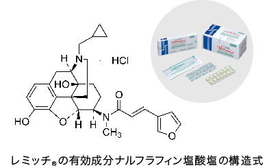
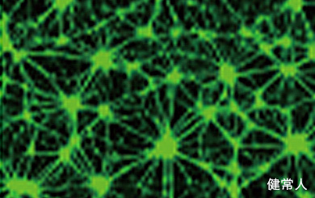
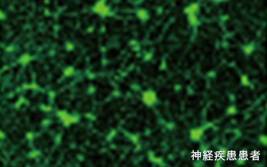
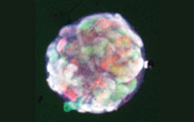
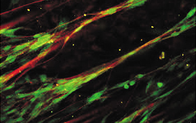

医薬研究所
基礎的研究によって全く新規な成長ラインの製品を創造することを目的に1962年に設立された基礎研究所は、これまで炭素繊維、医療材料、医薬といった新規事業創出に貢献してきましたが、研究内容を医薬に特化してきたことから、1999年に医薬研究所と改称されました。医薬研究所は、基礎研究所の理念を引き継ぎ、革新的新薬の創出に取り組んでいます。
東レは、フエロン®、 ドルナー®、レミッチ®といった革新的新薬やRADIFIL®のような東レのフィルムコーティング技術を活かした製剤技術を世界に先駆け創出してきました。現在も知財戦略も含めた既上市薬のライフサイクルマネジメントに取り組むとともに、引き続き新薬創出にも力を入れています。臨床開発中のTRK-750（東レ開発コード）は新規メカニズムの末梢神経障害治療薬として期待されています。今後も、今までの創薬研究・開発の過程で蓄積・育成してきた技術・経験と東レの総合力を強みとして活かし、アンメットメディカルニーズに粘り強く挑戦する「東レらしい創薬」を徹底的に追求することにより、他社と差別化していきたいと考えています。特に、①東レの先端材料技術や、医療材・バイオツール・動物薬などの医薬以外のライフイノベーション分野の事業・技術の知見をこれまで以上に創薬に活かすとともに、②医薬研究所の強みである高度な有機合成化学、メディシナルケミストリー、生物評価技術、バイオテクノロジー（遺伝子工学・蛋白工学・細胞工学）をさらに強化し、③発展著しいオミクス技術、イメージング技術、iPS細胞技術の導入やトランスレーショナルリサーチの強化など、新薬創出能力の一層の充実を図っていくことにより、東レ独自の創薬を強化しています。また、幅広くAI・インフォマティクス技術の開発・活用にも注力しており、医薬分子設計はもちろん、実験画像解析の自動化による研究効率化などにも取り組んでいます。さらに、革新的新薬を早く医療現場に届けることが社会貢献になると考え、創薬の確度とスピードの向上のために、国内外の製薬企業やアカデミア､ベンチャーとのオープンイノベーションを推進しています。
なお、医薬研究所は、東レの総合力を活かした創薬に挑戦するだけでなく、医薬研究所の高度な有機合成技術、生物技術、安全性評価技術、デジタル技術で、医薬以外の事業分野の課題解決にも積極的に取り組み、東レグループの事業拡大に貢献しています。
レミッチ®

高伸度性ポリマー：polyvinyl alcohol (PVA)

高伸度性、高遮光性、速溶解性を有する独自フィルムコーティング技術 RADIFIL®を用いた レミッチ®OD錠
最先端技術を取り込んだ創薬研究：創薬の確度向上
病態を模倣した細胞モデルの活用


患者iPS細胞を用いた神経変性疾患モデル

ヒトiPS細胞から作製した腎オルガノイド

神経・シュワン細胞によるミエリン形成
AI・インフォマティクスの活用
研究・開発の歩み（抜粋）
| 1962 | 基礎研究所設立 |
|---|---|
| 1985 | 天然型インターフェロンベータ製剤 フエロン®の生産開始 |
| 1992 | フエロン®のＣ型肝炎への効能追加 末梢循環障害治療剤ドルナー®の生産開始 |
| 1999 | 医薬研究所に改名 ドルナー®肺高血圧症効能追加 |
| 2006 | フエロン®のC型代償性肝硬変効能追加 |
| 2007 | 肺高血圧症治療剤 ケアロード®の販売開始 |
| 2009 | 経口そう痒症改善剤レミッチ®の生産開始 |
| 2015 | レミッチ®の慢性肝疾患患者における難治性そう痒症の改善に対する効能追加 |
| 2017 | レミッチ®口腔内崩壊錠の販売開始 レミッチ®の腹膜透析患者における難治性そう痒症の改善に対する効能追加 |
※レミッチ®は鳥居薬品の登録商標です。